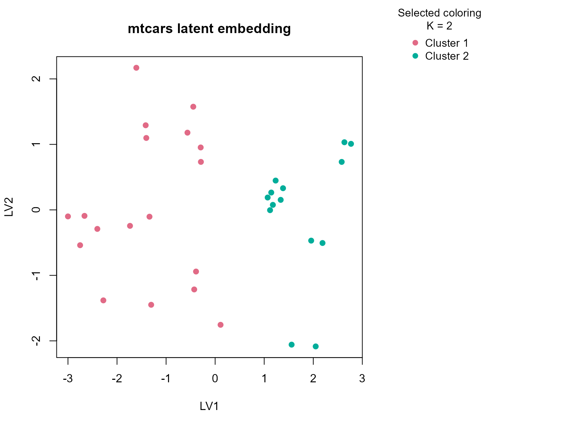

Background
mtcars is a classic vehicle dataset with mostly
continuous specifications plus a few discrete engineering descriptors.
It is a convenient real example for mixed-table clustering in a
transport context. The table is also small enough that unstable
high-K segmentations are easy to invent, which makes it a
good test of whether uccdf stays conservative.
Objective
The objective is to identify stable vehicle segments from performance and design features and to see whether the resulting clusters line up with transmission, cylinder structure, and broad efficiency-versus-power tradeoffs.
Data preparation
cars_df <- mtcars
cars_df$sample_id <- rownames(mtcars)
cars_df$am <- factor(cars_df$am, labels = c("automatic", "manual"))
cars_df$vs <- factor(cars_df$vs, labels = c("v-shaped", "straight"))
cars_df$cyl <- ordered(cars_df$cyl, levels = c(4, 6, 8))
cars_df$gear <- ordered(cars_df$gear, levels = c(3, 4, 5))
analysis_cars <- cars_df[, c("sample_id", "mpg", "disp", "hp", "wt", "qsec", "am", "vs", "cyl", "gear")]
head(analysis_cars)
#> sample_id mpg disp hp wt qsec am
#> Mazda RX4 Mazda RX4 21.0 160 110 2.620 16.46 manual
#> Mazda RX4 Wag Mazda RX4 Wag 21.0 160 110 2.875 17.02 manual
#> Datsun 710 Datsun 710 22.8 108 93 2.320 18.61 manual
#> Hornet 4 Drive Hornet 4 Drive 21.4 258 110 3.215 19.44 automatic
#> Hornet Sportabout Hornet Sportabout 18.7 360 175 3.440 17.02 automatic
#> Valiant Valiant 18.1 225 105 3.460 20.22 automatic
#> vs cyl gear
#> Mazda RX4 v-shaped 6 4
#> Mazda RX4 Wag v-shaped 6 4
#> Datsun 710 straight 4 4
#> Hornet 4 Drive straight 6 3
#> Hornet Sportabout v-shaped 8 3
#> Valiant straight 6 3Analysis
fit_cars <- fit_uccdf(
analysis_cars,
id_column = "sample_id",
candidate_k = 1:5,
n_resamples = 24,
n_null = 59,
seed = 505
)
fit_cars$selection
#> $alpha
#> [1] 0.05
#>
#> $global_p_value
#> [1] 0.01666667
#>
#> $null_family
#> [1] "independence_marginal_null"
#>
#> $detected_structure
#> [1] TRUE
#>
#> $best_exploratory_k
#> [1] 2
#>
#> $best_supported_k
#> [1] 2
select_k(fit_cars)
#> k stability null_mean null_sd stability_excess z_score p_value
#> 1 2 0.8387988 0.1772862 0.02777217 0.6615126 23.819257 0.01666667
#> 2 3 0.6798918 0.1827268 0.04397963 0.4971650 11.304435 0.01666667
#> 3 4 0.7665981 0.2908616 0.05826529 0.4757365 8.165005 0.01666667
#> 4 5 0.8471244 0.4070201 0.05628692 0.4401043 7.818944 0.01666667
#> supported objective
#> 1 TRUE 23.680628
#> 2 TRUE 10.084712
#> 3 TRUE 6.887746
#> 4 TRUE 5.497056Results
cars_assign <- merge(
augment(fit_cars),
cars_df,
by.x = "row_id",
by.y = "sample_id",
all.x = TRUE
)
head(cars_assign)
#> row_id cluster confidence ambiguity exploratory_cluster
#> 1 AMC Javelin 2 1.0000000 2.296675e-10 2
#> 2 Cadillac Fleetwood 2 1.0000000 2.302158e-10 2
#> 3 Camaro Z28 2 1.0000000 2.066626e-10 2
#> 4 Chrysler Imperial 2 1.0000000 2.297518e-10 2
#> 5 Datsun 710 1 0.9549241 4.507593e-02 1
#> 6 Dodge Challenger 2 1.0000000 2.432375e-10 2
#> exploratory_confidence exploratory_ambiguity assignment_mode selected_k
#> 1 1.0000000 2.296675e-10 selected 2
#> 2 1.0000000 2.302158e-10 selected 2
#> 3 1.0000000 2.066626e-10 selected 2
#> 4 1.0000000 2.297518e-10 selected 2
#> 5 0.9549241 4.507593e-02 selected 2
#> 6 1.0000000 2.432375e-10 selected 2
#> exploratory_k mpg cyl disp hp drat wt qsec vs am gear carb
#> 1 2 15.2 8 304 150 3.15 3.435 17.30 v-shaped automatic 3 2
#> 2 2 10.4 8 472 205 2.93 5.250 17.98 v-shaped automatic 3 4
#> 3 2 13.3 8 350 245 3.73 3.840 15.41 v-shaped automatic 3 4
#> 4 2 14.7 8 440 230 3.23 5.345 17.42 v-shaped automatic 3 4
#> 5 2 22.8 4 108 93 3.85 2.320 18.61 straight manual 4 1
#> 6 2 15.5 8 318 150 2.76 3.520 16.87 v-shaped automatic 3 2
aggregate(
cbind(mpg, disp, hp, wt, qsec, confidence) ~ cluster,
data = cars_assign,
FUN = function(x) round(mean(x, na.rm = TRUE), 2)
)
#> cluster mpg disp hp wt qsec confidence
#> 1 1 23.97 135.54 98.06 2.61 18.69 0.92
#> 2 2 15.10 353.10 209.21 4.00 16.77 1.00
table(cars_assign$cluster, cars_assign$am)
#>
#> automatic manual
#> 1 7 11
#> 2 12 2
table(cars_assign$cluster, cars_assign$cyl)
#>
#> 4 6 8
#> 1 11 7 0
#> 2 0 0 14
round(prop.table(table(cars_assign$cluster, cars_assign$cyl), margin = 1), 3)
#>
#> 4 6 8
#> 1 0.611 0.389 0.000
#> 2 0.000 0.000 1.000
plot_embedding(fit_cars, color_by = "selected", main = "mtcars latent embedding")
plot_consensus_heatmap(fit_cars, main = "mtcars consensus heatmap")Discussion
The selected two-cluster solution captures a broad division in
vehicle design and performance. One cluster typically contains lighter
cars with better fuel economy, smaller displacement, and lower
horsepower, while the other contains heavier and more powerful vehicles.
The am and cyl tables help confirm that this
is a mechanically meaningful split rather than a numerical artifact:
automatic transmissions and larger cylinder counts often enrich the
heavier cluster, but they do not define it perfectly on their own.
This is exactly the kind of table where a simpler stable partition is more useful than a larger but less robust segmentation. The heatmap usually shows two clear blocks with only a small number of boundary cars, which supports the idea that the dominant structure is a two-segment market split.
Interpretation
For mtcars, the clusters are best read as stable vehicle
segments such as lighter efficiency-oriented cars versus heavier
performance-oriented cars. The article shows that even a mostly numeric
engineering table benefits from the typed consensus workflow once a few
discrete descriptors are included, because those descriptors help anchor
the interpretation of the numeric split.